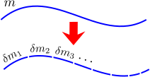
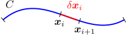
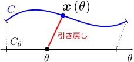
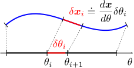
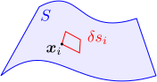
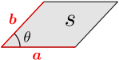
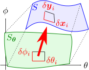

14.3次元の密度積分
この章では、
線密度の積分公式(
)、
面密度の積分公式(
)、
体積密度の積分公式(
)を導く。
全体の質量＝微小要素の質量の和

曲線（の形をしたひもや針金）の全質量
を求めたい。線密度
が一様であればこれは簡単で、
は、
に「曲線の長さ
」を掛けたものになる：
。一方、
が場所によって異なる場合には、右図のように、曲線を多数の微小な線要素に仮想的に分割し、各々の線要素の質量
を足し合わせればよい（＝区分求積法）：
線要素を十分小さくとっておけば、各々の線要素は、「密度が一定」で「直線形状」となっていると近似できる。従って、
を求めるには、「その線要素の密度
」と「線要素の長さ
」（直線で近似することで容易に計算できる）の積で近似すればよい：
数値的に計算する場合にはこれで十分である。数学的に厳密に
を定式化するには、分割を非常に細かくしていった極限（
と書くことにする）を取ればよい：
この章では、針金の形状と密度分布が与えられた時に、式(
)を実際に計算するために、通常の積分
の形に帰着させる公式を求める。面密度や、体積密度についても同様に、多重積分に帰着させる。これらについて、以下の3つの節にそれぞれ分けて議論を行う：
線密度の積分面密度の積分体積密度の積分
また、14.3節の最後で、第13章で結果だけ示した楕円体の慣性モーメントを導出する。
14.1線密度の積分
この節では、曲線の形状を適当なパラメータ
で表すことにより、曲線上での積分を通常の積分
に帰着させる公式(
)を導く。
なお、見やすくするため、積分の表記として、以下の式(
)の代わりに、
を省略した式(
)を使う
（標準的な記法ではない）：
特に、以下のような多重積分の場合、式(
)よりも式(
)のほうが見やすいだろう：
全質量を微小要素の和で表す：式()

曲線を
とおく。冒頭で述べたように、
を微小な線要素に分割する。右図のように、
番目の線要素の始点を
とし、線要素の始点と終点を結ぶ差ベクトルを
とおく。全質量
は、線要素の質量
を全て足し合わせ、分割を無限に細かくする極限をとればよいので、
に注意して、以下のようになる：
式(
)は、以下のようにも表記する
（両方とも一般的な記法ではない）：
式(
)の
を形式的に
に置き換えた形になっているのは、通常の区分求積法と同様である。
は曲線
上で積分を行うことを表す。式(
)の記法は、被積分関数
（
の部分）が複雑になった時に、見やすくするために使う
（電磁力学編でこの記法を多用する）。以降では、式(
)の記法を主に使うことにする。
式()を数直線上の積分に引き戻す：式()
式(
)の値は、曲線の形状と密度を与えることで決まる。問題は、これをどう計算するかである。曲線
は1次元なので、3次元空間内の積分(
)を、1次元の数直線上の積分
の形に変換することを考えるのが自然だろう。この変換を行うことを、積分を
（3次元空間から数直線上に）「引き戻す（pullback）」という。

引き戻しを行うために、右図のように針金の曲線
に適当なパラメータ
を入れてやる：
。
を与えれば、対応する
が決まるわけである。
が取り得る範囲を
とおく。これにより、密度分布
も、
上に引き戻されることになる：
。

ここで、
の分割を決めれば、曲線
の分割も決まることに着目する。具体的には、右図のように
を微小な線要素
に分割してやれば、
は、微分の連鎖律：
により自動的に決まる。このことを、
の分割を
に「押し出す（pushforward）」という。
この式(
)を代入すれば、
を
で表すことができる：
は計量
（または計量テンソル）と呼ばれる。
計量という名前は、式()のように、
から、
の大きさ
を「計量」するために必要な量であることに由来する。また、
部分は本来、絶対値を付けて
とすべき所だが、
となるように分割することにして絶対値を外した。
後は、式(
)を式(
)に代入すれば、全質量
が、1次元の数直線上での積分で表される。実際、
の範囲を
として以下のようになる：
よって、曲線
上の積分を数直線上に引き戻すための、以下の公式が成り立つことになる：
（例題）円の場合：式()
例題として、線密度が一定値
で、半径
の円形の針金の質量
を考える。
答えは、もちろん
（円周の長さ
に線密度
をかけたもの）であるが、式()を用いて計算する。
2次元の極座標
による引き戻しを考えると、
は、式(
)より
よって、
に注意して、全質量
は、式(
)から以下のように求められる：
14.2面密度の積分
この節では、曲面の形状をパラメータ表示することで、曲面上での積分を通常の多重積分に帰着させる公式(
)を導く。
全質量を微小要素の和で表す：式()

前節と同様に、曲面（
とおく）を微小な面要素に分割する。右図のように、
番目の微小要素上の1点を
とし、要素の面積を
とおく。すると、
の全質量
は、面要素の質量
の和により、以下のように書ける：
式(
)は、以下のようにも表記する
（両方とも一般的な記法ではない）：
は曲面
上の積分であることを表す。前節の線積分の場合と揃えるために
という記号を使っているが、これは、微小な面積を象徴的に表している。実際、
2次元平面上の2つのベクトル
が作る平行四辺形の面積
が、
（
は行列式であり、符号は全体が正になるように選ぶ）と書けることを考えると自然だろう。
なお、3次元空間でも成り立つ面積の公式は、以下の【14.2-注1】のようになる。
【14.2-注1】3次元空間での面積の公式
2つの3次元ベクトル
が作る平行四辺形の面積
は、以下のようになる：
は行列式である（
と書くと見づらいため）。
導出

導出は、内積の公式
を使うだけである
（
は
のなす角）。実際、式(
)の右辺の2乗を計算していくと、以下のようになる：
式()を2次元平面上の積分に引き戻す：式()
曲面自体は2次元なので、積分(
)を2次元平面上の積分に引き戻すことを考える。そのためには、前節と同様、曲面
上に、適当なパラメータ
を入れてやればよい：
。
の取る領域を
とおく。

前節の1次元の場合と同様に、
を微小面要素に分割する。ただし、微小面要素は軸に沿った長方形となるようにとるものとする（右図緑色部分）。
での分割を
に押し出すことにより、
の分割も決まる。実際、横辺
と縦辺
を元の曲面
に押し出したベクトル、それぞれ
は
となる。
面要素の面積
を、
を用いて表すには、式(
)を面積公式(
)に代入すればよい：
右と同じ式式公式
なお、
には、本来絶対値が付くが、前節と同様に
とすることにして絶対値を外した。
式(
)を区分求積の式(
)に代入すると、全質量
が、2次元平面
上の積分で表される：
よって、曲面
上の積分を2次元の多重積分に引き戻す、以下の公式が成り立つわけである：
（左辺は式()）
一般に、
赤字部分は、
に依存する。また、
での積分と
での積分を入れ替えて値は変わらないが、その場合は、
緑字部分が
に依存するようになる。
（例題）球面の場合：式()
面密度が一定値
で半径
の球面の質量
を考える。答えはもちろん、
である。
極座標
を用いて引き戻すことを考える。まず、
は、計量
の定義(
)により、以下のようになる：
（
が上手く対角化されているのは、
軸と
軸が直交するためである。）よって、式(
)から
が求まる。実際、
が、
と
で定義される直方体であることに注意して
14.3体積密度の積分
立体の場合、すでに通常の多重積分の形になっているので、引き戻しは、単なる変数変換となる。この節では、その変数変換の公式(
)を導く。
全質量を微小要素の和で表す：式()
立体
を微小な体積要素に分割する。
番目の要素上の1点を
、体積を
とおくと、全質量
は
となる。前節同様、式(
)は、以下のようにも表記する：
3つのベクトル
が作る平行六面体の体積
は、平行四辺形の面積に場合(
)と同様に
となる。
あるいは、公式
が使えるので、以下のようにも書ける：（符号は全体が正になるようにとる）
そのまま計算する場合は式()、変数変換を行う場合は式()
3次元の場合は、引き戻し
（変数変換）を行わなくても計算できる。実際、体積要素が「
軸に沿った直方体」になるように分割を行えば、その体積
は、
直方体の各辺の長さを
として、
となるので、式(
)は以下のようになる：
前節と同様、各変数について順に積分すれば計算できる。
とはいえ、変数変換を考えたほうがよい場合もある。
例えば、球対称な物体の場合は、極座標を用いた方が計算しやすいだろう。変数変換を行うために、立体
上に適当なパラメータ
を入れる：
。
の取り得る領域を
とする。
を
軸に沿った直方体の微小体積要素に分割し、それを
に押し出したものの体積
は、式(
)を用いて以下のようになる：
(曲面の場合の式()の導出と同様)
右と同じただし
には、本来絶対値がつくが、ここでも
と約束することにして、絶対値を外した。
上式(
)を、式(
)に代入すると、変数変換を行った場合の公式が得られる：
なお、
は以下のようにもかける：（符号は全体が正になるようにとる）
よって、以下の変数変換の公式が得られる：
（例題1）球の場合：式()
密度が一定値
で半径
の球の質量
を考える。答えはもちろん、
である。
極座標
を用いて変数変換することを考える。
は、計量
の定義(
)により
となる
（今回も計量
が対角行列になっているが、これも
軸が互いに直交するからである）。よって、式(
)から
が計算できる：
（例題2）楕円体の慣性モーメント：式()
第13章では、密度
が一定値の楕円体
の慣性モーメント
の値が以下の式(
)となることを、結果だけ示した。ここではその導出を行う。
まず、楕円体の積分を球の積分にするために、以下の変数変換を考える：
すると、積分領域は単位球になり、計量は
となる。これらを用いて、
は以下のようになる：
非対角部分は、被積分関数が軸のいずれかに関して奇関数であり、積分するとになる積分領域が球対称になっているのでをで置き換えても値は変わらない
くくりだされた青字部分は、以下の【14.3-注1】のように
となる。よって
は、楕円体の質量
を用いて、以下のようになる：
【14.3-注1】積分の公式
以下の積分公式が成り立つ：
導出
導出は、極座標に変数変換すればよい：